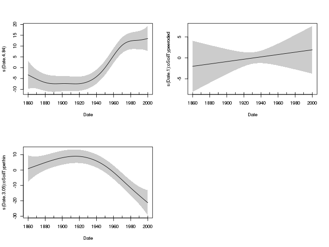

Comparing smooths in factor-smooth interactions II
ordered factors
Posted in
Tagged
GAM smooths factor-smooth interactions mgcv difference smooths
In a previous post I looked at an approach for computing the differences between smooths estimated as part of a factor-smooth interaction using s()’s by argument. When a common-or-garden factor variable is passed to by, gam() estimates a separate smooth for each level of the by factor. Using the \(Xp\) matrix approach, we previously saw that we can post-process the model to generate estimates for pairwise differences of smooths. However, the by variable approach of estimating a separate smooth for each level of the factor my be quite inefficient in terms of degrees of freedom used by the model. This is especially so in situations where the estimated curves are quite similar but wiggly; why estimate many separate wiggly smooths when one, plus some simple difference smooths, will do the job just as well? In this post I look at an alternative to estimating separate smooths using an ordered factor for the by variable.
When an ordered factor is passed to by, mgcv does something quite different to the model I described previously, although the end results should be similar. What mgcv does in the ordered factor case is to fit \(L-1\) difference smooths, where \(l = 1, \dots, L\) are the levels of the factor and \(L\) the number of levels. These smooths model the difference between the smooth estimated for the reference level and the \(l\)th level of the factor. Additionally, the by variable smooth doesn’t itself estimate the smoother for the reference level; so we are required to add a second smooth to the model that estimates that particular smooth.
In pseudo code our model would be something like, for ordered factor of,
model <- gam(y ~ of + s(x) + s(x, by = of), data = df)As with any by factor smooth we are required to include a parametric term for the factor because the individual smooths are centered for identifiability reasons. The first s(x) in the model is the smooth effect of x on the reference level of the ordered factor of. The second smoother, s(x, by = of) is the set of \(L-1\) difference smooths, which model the smooth differences between the reference level smoother and those of the individual levels (excluding the reference one).
Note that this model still estimates a separator smoother for each level of the ordered factor, it just does it in a different way. The smoother for the reference level is estimated via contribution from s(x) only, whilst the smoothers for the other levels are formed from the additive combination of s(x) and the relevant difference smoother from the set created by s(x, by = of). This is analogous to the situation we have when estimating an ANOVA using the default contrasts and lm(); the intercept is then an estimate of the mean response for the reference level of the factor, and the remaining model coefficients estimate the differences between the mean response of the reference level and that of the other factor levels.
This ordered-factor-smooth interaction is most directly applicable to situations where you have a reference category and you are interested in difference between that category and the other levels. If you are interested in pair-wise comparison of smooths you could use the ordered factor approach — it may be more parsimonious than estimating separate smoothers for each level — but you will still need to post-process the results in a manner similar to that described in the previous post1.
To illustrate the ordered factor difference smooths, I’ll reuse the example from the Geochimica paper I wrote with my colleagues at UCL, Neil Rose, Handong Yang, and Simon Turner (Rose et al., 2012), and which formed the basis for the previous post.
Neil, Handong, and Simon had collected sediment cores from several Scottish lochs and measured metal concentrations, especially of lead (Pb) and mercury (Hg), in sediment slices covering the last 200 years. The aim of the study was to investigate sediment profiles of these metals in three regions of Scotland; north east, north west, and south west. A pair of lochs in each region was selected, one in a catchment with visibly eroding peat/soil, and the other in a catchment without erosion. The different regions represented variations in historical deposition levels, whilst the hypothesis was that cores from eroded and non-eroded catchments would show differential responses to reductions in emissions of Pb and Hg to the atmosphere. The difference, it was hypothesized, was that the eroding soil acts as a secondary source of pollutants to the lake. You can read more about it in the paper — if you’re interested but don’t have access to the journal, send me an email and I’ll pass on a pdf.
Below I make use of the following packages
- readr
- dplyr
- ggplot2, and
- mgcv
You’ll more than likely have these installed, but if you get errors about missing packages when you run the code chunk below, install any missing packages and run the chunk again
library('readr')
library('dplyr')
library('ggplot2')
theme_set(theme_bw())
library('mgcv')Next, load the data set and convert the SiteCode variable to a factor
uri <- 'https://gist.githubusercontent.com/gavinsimpson/eb4ff24fa9924a588e6ee60dfae8746f/raw/geochimica-metals.csv'
metals <- read_csv(uri, skip = 1, col_types = c('ciccd'))
metals <- mutate(metals, SiteCode = factor(SiteCode))This is a subset of the data used in Rose et al. (2012) — the Hg concentrations in the sediments for just three of the lochs are included here in the interests of simplicity. The data set contains 5 variables
metals
# A tibble: 44 x 5
SiteCode Date SoilType Region Hg
<fctr> <int> <chr> <chr> <dbl>
1 CHNA 2000 thin NW 3.843399
2 CHNA 1990 thin NW 5.424618
3 CHNA 1980 thin NW 8.819730
4 CHNA 1970 thin NW 11.417457
5 CHNA 1960 thin NW 16.513540
6 CHNA 1950 thin NW 16.512047
7 CHNA 1940 thin NW 11.188840
8 CHNA 1930 thin NW 11.622222
9 CHNA 1920 thin NW 13.645853
10 CHNA 1910 thin NW 11.181711
# ... with 34 more rows
SiteCodeis a factor indexing the three lochs, with levelsCHNA,FION, andNODH,Dateis a numeric variable of sediment age per sample,SoilTypeandRegionare additional factors for the (natural) experimental design, andHgis the response variable of interest, and contains the Hg concentration of each sediment sample.
Neil gave me permission to make these data available openly should you want to try this approach out for yourself. If you make use of the data for other purposes, please cite the source publication (Rose et al., 2012) and recognize the contribution of the data creators; Handong Yang, Simon Turner, and Neil Rose.
To proceed, we need to create an ordered factor. Here I’m going to use the SoilType variable as that is easier to relate to conditions of the soil (rather than the Site Code I used in the previous post). I set the non-eroded level to be the reference and as such the GAM will estimate a full smooth for that level and then smooth differences between the non-eroded, and each of the eroded and thin lakes.
metals <- mutate(metals,
oSoilType = ordered(SoilType, levels = c('non-eroded','eroded','thin')))The ordered-factor GAM is fitted to the three lochs using the following
m <- gam(Hg ~ oSoilType + s(Date) + s(Date, by = oSoilType), data = metals,
method = 'REML')and the resulting smooths can be drawn using the plot() method
plot(m, shade = TRUE, pages = 1, scale = 0, seWithMean = TRUE)
The smooth in the top left is the reference smooth trend for the non-eroded site. The other two smooths are the difference smooths between the non-eroded and eroded sites (top right).
It is immediately clear that the difference between the non-eroded and eroded sites is not significant under this model. The estimated difference is linear, which suggests the trend in the eroded site is stronger than the one estimated for the non-eroded site. However, this difference is not so large as to be an identifiably different trend.
The difference smooth for the thin soil site is considerably different to that estimated for the non-eroded site; the principal difference being the much reduced trend in the thin soil site, as indicated by the difference smooth acting in opposition to the estimated trend for the non-eroded site.
A nice feature of the ordered factor approach is that inference on these difference can be performed formally and directly using the summary() output of the estimated GAM
summary(m)
Family: gaussian
Link function: identity
Formula:
Hg ~ oSoilType + s(Date) + s(Date, by = oSoilType)
Parametric coefficients:
Estimate Std. Error t value Pr(>|t|)
(Intercept) 13.2231 0.6789 19.478 < 2e-16 ***
oSoilType.L -1.6948 1.1608 -1.460 0.15399
oSoilType.Q -4.2847 1.1990 -3.573 0.00114 **
---
Signif. codes: 0 '***' 0.001 '**' 0.01 '*' 0.05 '.' 0.1 ' ' 1
Approximate significance of smooth terms:
edf Ref.df F p-value
s(Date) 4.843 5.914 10.862 2.67e-07 ***
s(Date):oSoilTypeeroded 1.000 1.000 0.471 0.498
s(Date):oSoilTypethin 3.047 3.779 10.091 1.84e-05 ***
---
Signif. codes: 0 '***' 0.001 '**' 0.01 '*' 0.05 '.' 0.1 ' ' 1
R-sq.(adj) = 0.76 Deviance explained = 82.1%
-REML = 126.5 Scale est. = 20.144 n = 44
The impression we formed about the differences in trends are reinforced with actual test statistics; this is a clear advantage of the ordered-factor approach if your problem suits this different from reference situation.
One feature to note, because we used an ordered factor, the parametric term for oSoilType uses polynomial contrasts: the .L and .Q refer to the linear and quadratic terms used to represent the factor. This is not as easy to identify differences in mean Hg concentration. If you want to retain that readily interpreted parameterisation, use the SoilType factor for the parametric part:
m <- gam(Hg ~ SoilType + s(Date) + s(Date, by = oSoilType), data = metals,
method = 'REML')
summary(m)
Family: gaussian
Link function: identity
Formula:
Hg ~ SoilType + s(Date) + s(Date, by = oSoilType)
Parametric coefficients:
Estimate Std. Error t value Pr(>|t|)
(Intercept) 16.722 1.213 13.788 4.88e-15 ***
SoilTypenon-eroded -4.049 1.684 -2.405 0.022115 *
SoilTypethin -6.446 1.681 -3.835 0.000553 ***
---
Signif. codes: 0 '***' 0.001 '**' 0.01 '*' 0.05 '.' 0.1 ' ' 1
Approximate significance of smooth terms:
edf Ref.df F p-value
s(Date) 4.843 5.914 10.862 2.67e-07 ***
s(Date):oSoilTypeeroded 1.000 1.000 0.471 0.498
s(Date):oSoilTypethin 3.047 3.779 10.091 1.84e-05 ***
---
Signif. codes: 0 '***' 0.001 '**' 0.01 '*' 0.05 '.' 0.1 ' ' 1
R-sq.(adj) = 0.76 Deviance explained = 82.1%
-REML = 125.95 Scale est. = 20.144 n = 44
Now the output in the parametric terms section is easier to interpret yet we retain the behavior of the reference smooth plus difference smooths part of the fitted GAM.
References
References
Footnotes
Except now you need to be sure to include the right set of basis functions that correspond to the pair of levels you want to compare. You can’t do that with the function I included in that post; it requires something a bit more sophisticated, but the principles are the same.↩︎